This set explores shower girl cozy feel through retro aesthetics and cool tone under neon lights. Compositions use close-up with urban backdrop, keeping focus clear and tidy. Details like office styling and balanced colors make browsing easy.
Browse shower images. Page 4 of curated shower-style portrait collection.
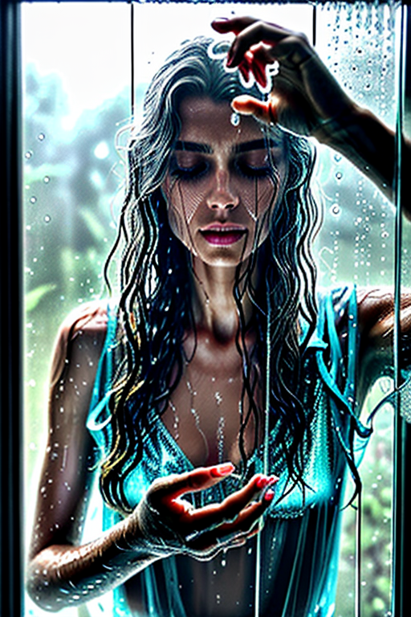

 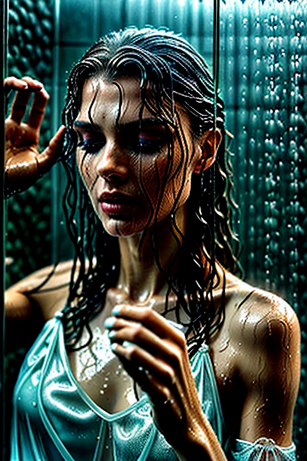
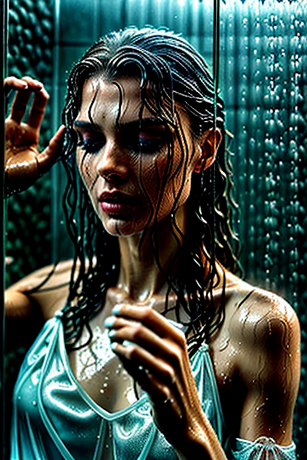
 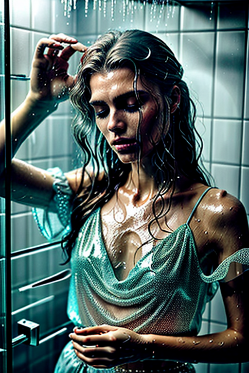
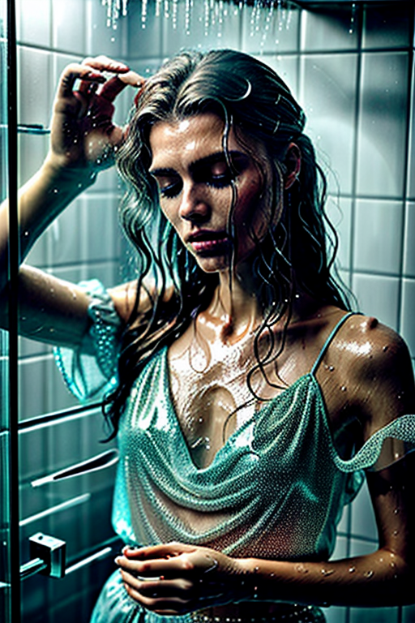


 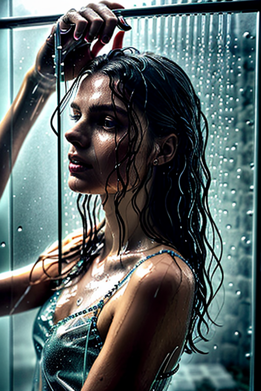
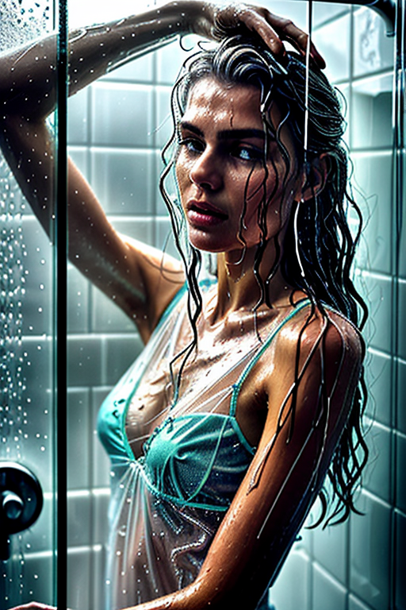
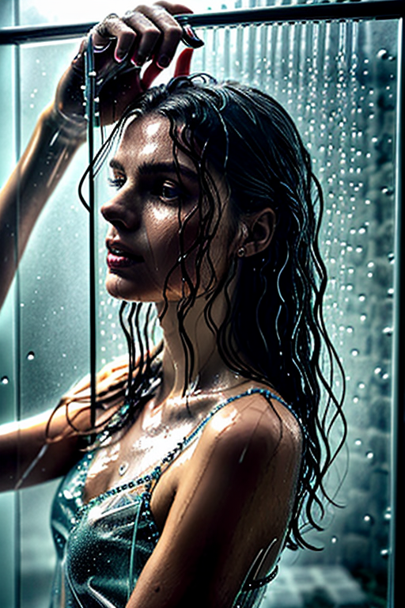
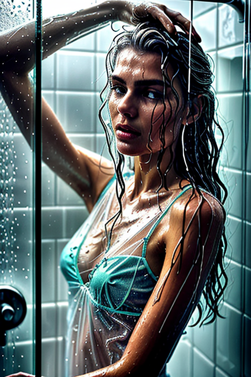


 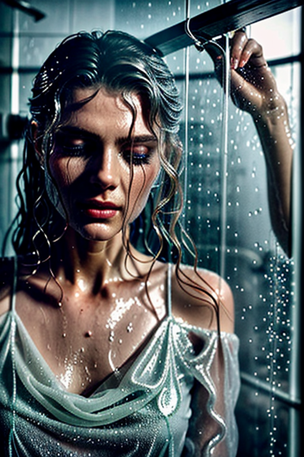
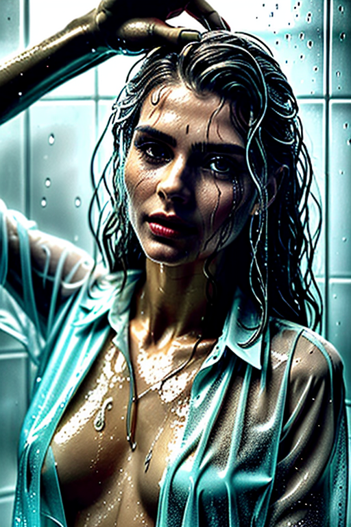
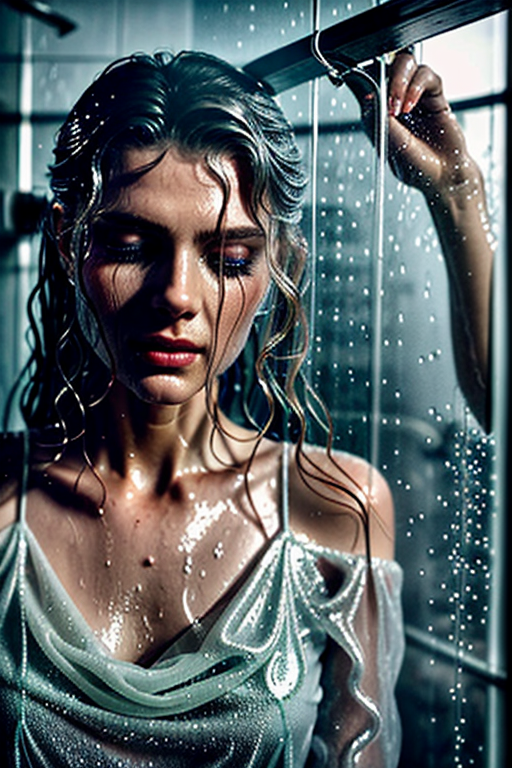
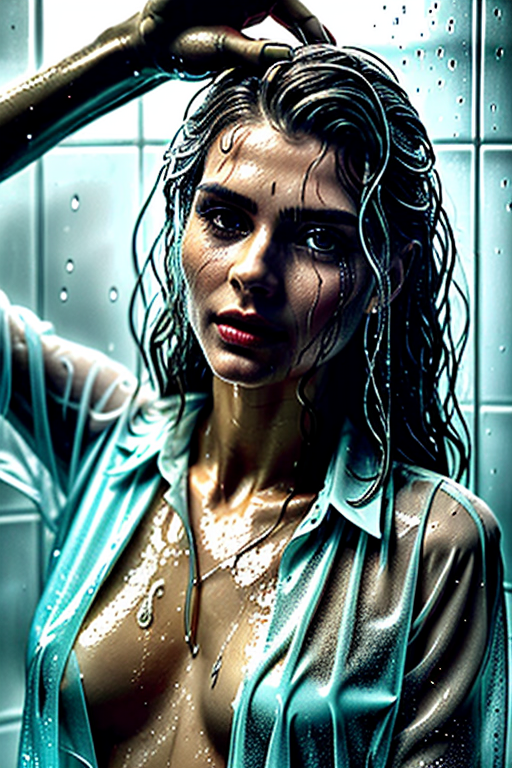

 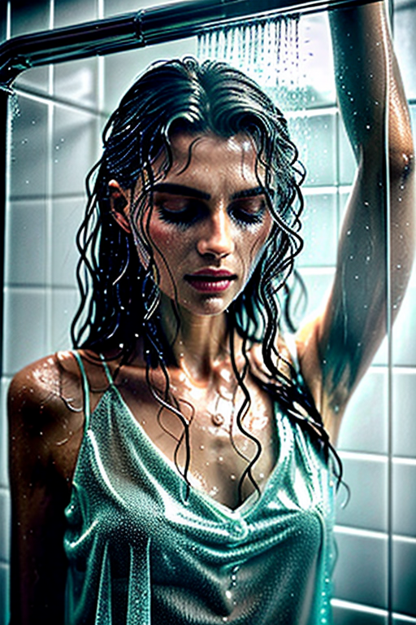
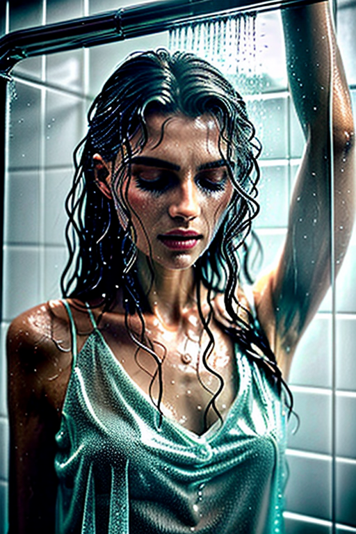
Designed for readers looking into page4, this page emphasizes clarity and consistency. The image aims to deliver a straightforward visual impression while keeping the file lightweight. A brief explanation clarifies the subject and lighting so visitors can quickly decide where to go next. If you are comparing alternatives, keep an eye on subtle differences in framing, contrast, and color balance. Internal navigation leads to related items with comparable tone or composition. This reduces bounce and supports exploration within the same theme. Bookmark the page if it’s useful; updates aim to improve clarity, speed, and overall structure over time. Internal navigation leads to related items with comparable tone or composition. This reduces bounce and supports exploration within the same theme. The image aims to deliver a straightforward visual impression while keeping the file lightweight. A brief explanation clarifies the subject and lighting so visitors can quickly decide where to go next. If you are comparing alternatives, keep an eye on subtle differences in framing, contrast, and color balance.